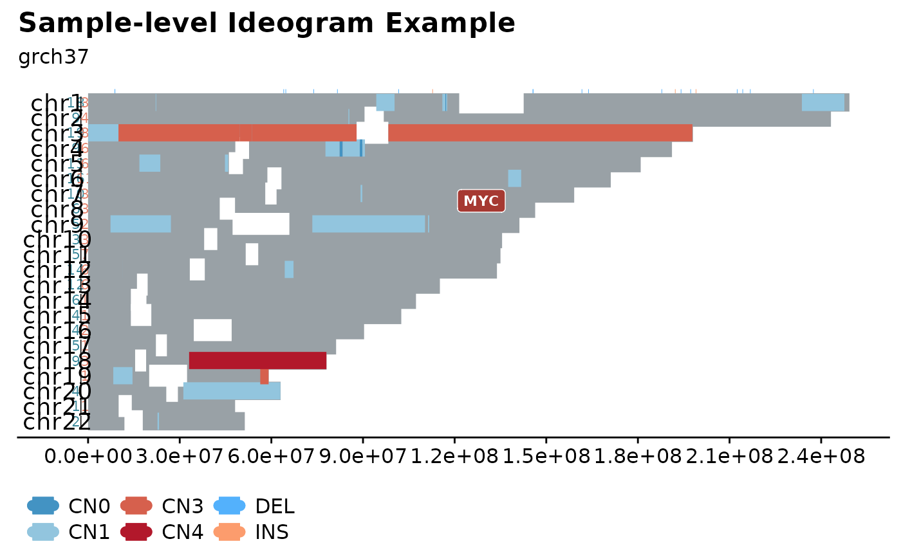

fancy_ideogram.RdGenerate sample-level ideogram with copy number information, ssm and gene annotations, etc.
fancy_ideogram(
this_sample_id,
gene_annotation,
seq_data,
seq_path = NULL,
maf_data,
maf_path = NULL,
variant_type_col_maf = 10,
chromosome_col_maf = 5,
start_col_maf = 6,
end_col_maf = 7,
chrom_col_seq = 2,
start_col_seq = 3,
end_col_seq = 4,
cn_col_seq = 7,
plot_title = paste0(this_sample_id),
plot_subtitle = "Genome-wide Ideogram (grch37).",
intersect_regions,
include_ssm = TRUE,
ssm_count = TRUE,
coding_only = FALSE,
from_flatfile = TRUE,
use_augmented_maf = TRUE,
this_seq_type = "genome"
)Sample to be plotted (for multiple samples, see fancy_multisample_ideogram.
Annotate ideogram with a set of genes. These genes can either be specified as a vector of characters or a data frame.
Optional parameter with copy number df already loaded into R.
Optional parameter with path to external cn file.
Optional parameter with maf like df already loaded into R.
Optional parameter with path to external maf like file.
Index of column holding Variant Type (to be used with either maf_data or maf_path).
Index of column holding Chromosome (to be used with either maf_data or maf_path).
Index of column with variant start coordinates (to be used with either maf_data or maf_path).
Index of column with variant end coordinates (to be used with either maf_data or maf_path).
Index of column with chromosome annotations (to be used with either maf_data or maf_path).
Index of column with copy number start coordinates (to be used with either maf_data or maf_path).
Index of column with copy number end coordinates (to be used with either maf_data or maf_path).
Index of column holding copy number information (to be used with either maf_data or maf_path).
Title of plot (default to sample ID).
Optional argument for plot subtitle.
Optional parameter for subset variant calls to specific regions. Should be either a vector of characters (chr:start-end) or data frame with regions.
Set to TRUE to plot SSMs (dels and ins).
Optional parameter to summarize n variants per chromosome, inlcude_ssm must be set to TRUE.
Optional. Set to TRUE to restrict to plotting only coding mutations.
If set to true the function will use flat files instead of the database.
Boolean statement if to use augmented maf, default is FALSE.
Seq type for returned CN segments. One of "genome" (default) or "capture".
A plot as a ggplot object (grob).
This function generates genome-wide ideograms, visualizing SSM data as well as CN segments.
It is also possible to superimpose the plot with gene annotations. Offering a comprehensive overview of all SSM and CN segments of different aneuploidy.
The plotting of SSM can be toggled with setting include_ssm to TRUE. If so, it is also possible to count the number of SSMs per chromosome with ssm_count = TRUE.
To get data for plotting, there are a few different options available; like all fanncy_x_plots a sample ID can be provided to the this_sample
parameter. If done so, the function will retrieve data (SSm and CN segments) by wrapping the appropriate functions.
This data can also be provided with seq_data, seg_path, maf_data and maf_path.
For more info on how to run with these parameters, refer to the parameter descriptions.
In order to annotate the ideogram with genes, simply give the gene_annotations parameter a set of genes as a vector of characters or a data frame with gene names in the first column.
Another useful parameter for restricting the plotted regions is to call the function with intersect_regions.
This parameter takes a vector of characters or a data frame with regions that the plotted calls are restricted to.
#build plot
fancy_ideogram(this_sample_id = "HTMCP-01-06-00422-01A-01D",
gene_annotation = "MYC",
plot_title = "Sample-level Ideogram Example",
plot_subtitle = "grch37")
#> 1 region(s) returned for 1 gene(s)
#> Warning: NAs introduced by coercion
#> Warning: invalid factor level, NA generated
#> Warning: ‘>’ not meaningful for factors
#> trying to find output from: battenberg
#> looking for flatfile: /projects/nhl_meta_analysis_scratch/gambl/results_local/gambl/battenberg_current/99-outputs/seg/genome--projection/HTMCP-01-06-00422-01A-01D--HTMCP-01-06-00422-10A-01D--matched.battenberg.grch37.seg
#> Warning: NAs introduced by coercion
#> Warning: NAs introduced by coercion
#> Warning: Ignoring unknown aesthetics: label
#> Warning: Ignoring unknown parameters: check_overlap
#> Warning: Width not defined. Set with `position_dodge(width = ?)`
#> Warning: Width not defined. Set with `position_dodge(width = ?)`
#> Warning: Width not defined. Set with `position_dodge(width = ?)`
#> Warning: Width not defined. Set with `position_dodge(width = ?)`
#> Warning: Width not defined. Set with `position_dodge(width = ?)`
#> Warning: Width not defined. Set with `position_dodge(width = ?)`
#> Warning: Width not defined. Set with `position_dodge(width = ?)`
#> Warning: Width not defined. Set with `position_dodge(width = ?)`
#> Warning: Width not defined. Set with `position_dodge(width = ?)`
#> Warning: Width not defined. Set with `position_dodge(width = ?)`
#> Warning: Width not defined. Set with `position_dodge(width = ?)`
#> Warning: Width not defined. Set with `position_dodge(width = ?)`
#> Warning: Width not defined. Set with `position_dodge(width = ?)`
#> Warning: Removed 8 rows containing missing values (geom_segment).
#> Warning: Removed 8 rows containing missing values (geom_segment).
#> Warning: Removed 8 rows containing missing values (geom_segment).
#> Warning: Removed 4 rows containing missing values (geom_segment).
#> Warning: Removed 4 rows containing missing values (geom_segment).
#> Warning: Removed 4 rows containing missing values (geom_segment).
#> Warning: Removed 1 rows containing missing values (geom_text).
#> Warning: Removed 1 rows containing missing values (geom_text).
#> Warning: Removed 6 rows containing missing values (geom_segment).
